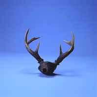

Sonidos de un Cráneo Vacío
El Diario de Caracas
24-9-1999
Muy en Alto 11-2004 Nº 1, Año 1, San Antonio de
los Altos, pag. 45.
¿Le daría miedo soplar dentro de la cavidad ósea sin encéfalo de un venado, para producir un solo silbido profundo?

Este curioso instrumento de aspecto aterrador aparece vivo y danzante en el Baile de Las Turas entre el edo. Falcón y Lara en las festividades de la Virgen de las Mercedes el 23 y 24 de septiembre. En Mapararí y San Pedro, edo. Falcón, lo llaman "Cacho de Venado" a pesar de que los cuernos del difunto animal no producen sonido alguno. Su cráneo es vaciado y cubierto por fuera con cera negra para cerrar los escapes de aire. No obstante se moja antes de tocarlo para sellar cualquier fallita y se sopla por un bisel creado en el único hueco de donde se desprendía la columna vertebral.
Los Cachos se ejecutan en pares, el grande y el chico, alternándose rítmicamente. Forman parte de un grupo de instrumentos utilizados en el Rito o Baile de Las Turas, manifestación mestiza de descendencia indígena (Jirajaras, Ayomanes y Gayones), en celebración de la cosecha del maíz. El rito fue absorbido por el calendario cristiano y reubicado en el día de la Virgen de las Mercedes sin tener nada en común con este santo. Las Turas son dos flautas de caña, la grande y la pequeña o macho y hembra, y la persona que las ejecuta toma una flauta en la mano y hace sonar al mismo tiempo en la otra mano una maraca llena de agujeritos. Las Turas hacen "sones" para diferentes partes del baile, como El Golpiao, El Murciélago y Chorro de Agua, acompañados de gritos, del Cuatro y de una Tambora.
Nuestro cráneo de venado pertenece además a otra cultura muy distante del edo. Falcón: Los Hiwi, conocidos también como los Guajibo del sur de Apure y un trocito al nor-oeste de Amazonas, utilizan este mismo instrumento con el nombre de "Ovevi Mataeto". Entre mayo y diciembre celebran el ritual más importante de su cultura, la Fiesta del Guarapo. Para esa ocasión la comunidad prepara el guarapo o chicha a base de jugo de caña de azúcar y yuca. Cantan, danzan y tocan al mismo tiempo sus flautas de pan Jiba, la vistosa maraca shamánica Tsitsiíto y los Ovevi Mataetos que sólo pueden ejecutar los hombres adultos.
El Ovevi, o cacho de venado, es un símbolo y
representante fiel de un grupo de culturas de nuestro gran país
que es muy diferente al venezolano común: los indígenas. Poco
conocidos por la generalidad, despreciados y atropellados,
luchan por sus derechos y re-afirmación cultural dentro de un
sistema ajeno a ellos que se los traga. Son tan diferentes que
si se asimilan a la cultura mayoritaria, desaparece su
esencia. Como educadores musicales podríamos considerar difundir
el Ovevi a todas las escuelas del país, o quizás una réplica del
instrumento que no utilizara cráneos de venado, en función de
formar una consciencia de estas diferencias en nuestros alumnos.
Pero el instrumento no se deja duplicar en cantidades, sería
inútil hacerlo, porque pertenece a otra dimensión cultural
y material que no manejamos. Mejor sería aprender a respetar a
esas culturas desde lejos, apreciarlas con delicadeza, sin
tocarlas.